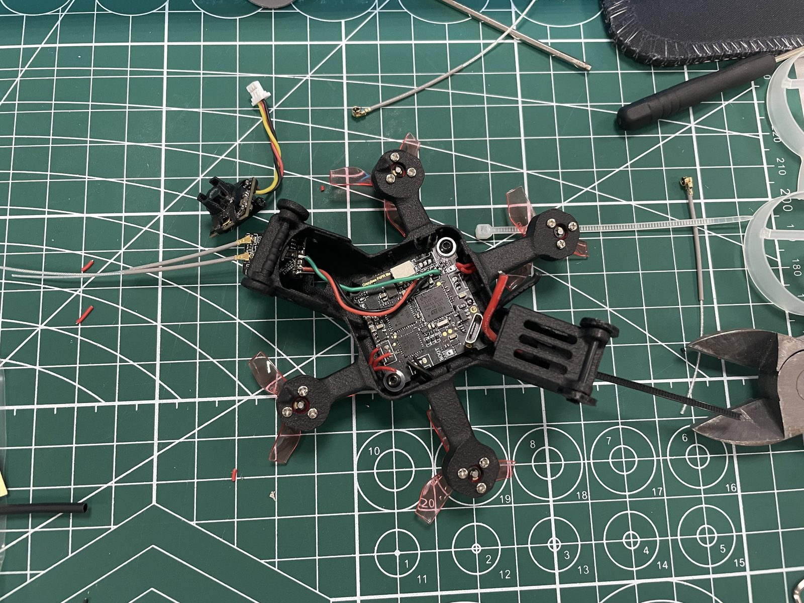
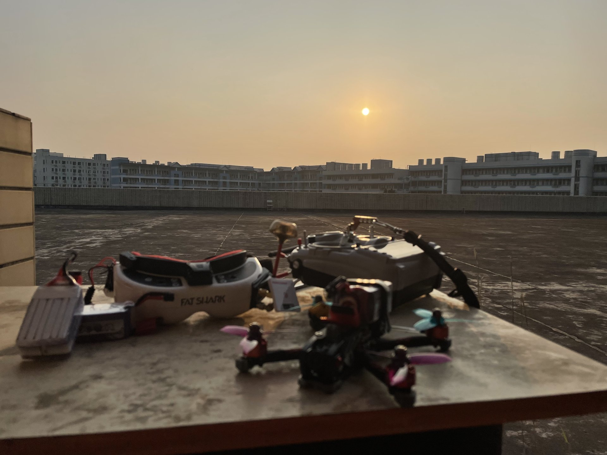
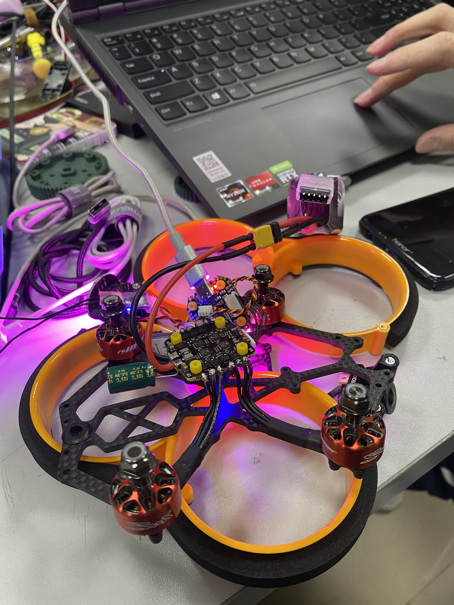

FPV Drones
Building and flying FPV quadcopters since high school — a few builds over the years: a ducted cinewhoop, a freestyle quad, and a toothpick.
The toothpick's motors are mounted at an angle, so it can also drive on the ground. Its SLS-printed nylon frame turns brittle in the cold, and winter crashes were usually followed by a nylon-glue repair.
The rooftop of my high school, Shimen Middle School, is my favorite flying field.


